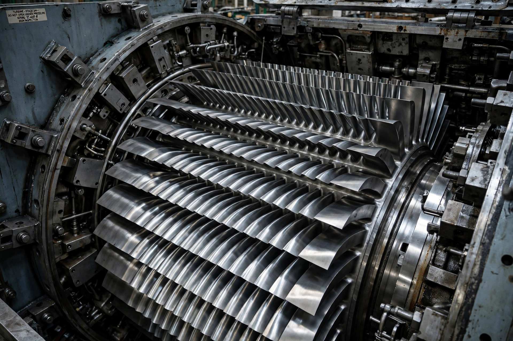

Steam turbine
From Wikipedia, the free encyclopedia

Steam turbine blading.A steam turbine is a machine that extracts thermal energy from pressurised steam and converts it into rotary motion, far more smoothly and efficiently than a reciprocating steam engine. Invented in practical form by Charles Parsons (1884) and Gustaf de Laval, turbines generate most of the world\'s electricity (in coal, gas, nuclear, geothermal and solar-thermal plants) and powered the fastest liners and warships of the 20th century.
Principle
Steam expands through alternating fixed and rotating blade rows (stages), in impulse, reaction or compounded designs. Parsons\' reaction turbine proved ideal for driving electrical generators (his 1884 unit made 7.5 hp) and scaled rapidly to hundreds of megawatts; single power-station turbines now exceed 1,500 MW (e.g. Arabelle units in EPR nuclear plants).
Marine use
Parsons famously gatecrashed the 1897 Spithead naval review with Turbinia, outrunning every ship; turbines then took over warships (Dreadnought, 1906) and express liners, where geared turbines balanced their high rpm against propeller speeds. Diesel and diesel-electric drives later displaced marine steam except in nuclear vessels.
Power generation
Steam cycles (including combined-cycle gas turbines, whose exhaust raises steam) produce the majority of global electricity. As grids decarbonise, steam turbines increasingly run in nuclear, biomass, geothermal and concentrated-solar plants, and as synchronous condensers for grid stability.